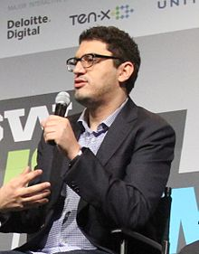

Sam Esmail (Hoboken, Nueva Jersey; 17 de septiembre de 1977) es un guionista, director de televisión y cine y productor televisivo estadounidense.
Es más conocido como el creador de la serie de televisión Mr. Robot.

Esmail nació en una familia egipcia en Hoboken, Nueva Jersey. Su familia es musulmana.
Mientras asistía a la Universidad de Nueva York, trabajó en su ordenador antes de ser puesto en período de prueba académica por un incidente allí.
Después de graduarse en la Escuela de Artes Tisch, consiguió un Máster en Bellas Artes del AFI Conservatory.
En 2008, escribió su primer guion para la película Secuelas, remakes y adaptaciones, siendo seleccionado en la Lista Negra,
una encuesta anual de más de 600 compañías de producción y ejecutivos de filmes de los guiones "más aclamados" aún no producidos. En 2014,
su película debut como director, Cometa, fue lanzada por IFC.
Es el creador, productor ejecutivo y escritor de la serie de suspenso tecnológico Mr. Robot, estrenada en USA Network el 24 de junio de 2015.
Esmail originalmente visualizó el proyecto como un largometraje. En una entrevista con la BBC, explicó la influencia en su trabajo:
"Tiendo a escribir acerca de personajes alienados que no pueden conectarse con otros y que se encuentran alejados de la cultura estadounidense.
No es algo que haga conscientemente, pero es algo que al final se apodera de mí debido a mi propia experiencia creciendo en Estados Unidos".
En agosto de 2015, se comprometió con la actriz Emmy Rossum después de salir durante dos años. Durante su debut como director,
la dirigió mientras trabajaba en Cometa. Se casaron en 2017. En mayo de 2021 anunció que iba a ser padre por primera vez y ese mismo mes su mujer
dio a luz a una niña. En abril de 2023 nació su hijo.
Su hermano menor, Samer Esmail, trabaja con él como asistente de postproducción.